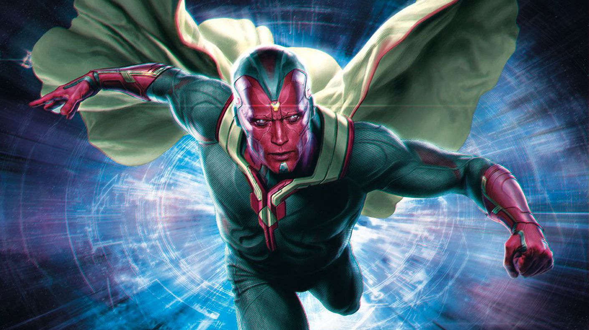

Paul Bettany sebagai Vision, Vision adalah salah satu karakter pada komik Marvel. Tokoh ini diciptakan oleh Roy Thomas, Stan Lee, dan John Buscema. Vision pertama kali muncul pada komik yang berjudul The Avengers volume 57 yang diterbitkan pada bulan Oktober tahun 1968. Tokoh Vision digambarkan sebagai robot android yang sangat pintar.
Berdasarkan komiknya, Vision diciptakan oleh robot bernama Ultron. Ultron membuat Vision berdasarkan bentuk tubuhnya sendiri dengan sebutan android synthezoid. Saat itu, Ultron menciptakan Vision untuk membunuh Hank Pym beserta istrinya Janet van Dyne (Wasp). Namun kala Vision mencoba untuk mengalahkan Wasp, Vision berhasil diprogram ulang oleh Wasp sehingga malah berbalik melawan Ultron sendiri.
Vision mengetahui jika Ultron menciptakan dirinya berdasarkan data dari Wonder Man dan Human Torch. sempat diprogram bebas, Ultron akhirnya dapat kembali menguasai Vision dengan kemampuan teknologinya, Ultron bahkan membuat Vision mengupgrade dirinya dengan bahan adamantium dan bahkan kembali menyerang kelompok Avengers.
Dalam komik Marvel lain berjudul Vision Quest, seorang Agen dari pemerintah Amerika berhasil menangkap Vision dan akhirnya membongkar tubuhnya. Beruntung saat itu aksi sang agen tersebut diketahui oleh Hank Pym yang akhirnya memprogram ulang Vision termasuk memasukan program tentang pengolahan emosi layaknya manusia.
Karena memiliki emosi layaknya manusia, Vision berkenalan dengan Scarlet Witch dan akhirnya menikah. Dengan kekuatan Hex yang dimiliki Scarlet Witch, mereka kemudian memiliki anak yang diberi nama Thomas dan William.
Sebagai robot yang berbentu manusia, Vision merupakan sebuah mesin yang bersumber dari tenaga matahari. Vision juga memiliki panca indra yang baik serta kecepatan yang bagus. Ia dapat mengeluarkan Infra merah dan gelombang micro untuk menyerang lawannya. Karena ia mesin, Vision dapat mengakses data dengan cepat dan selalu menjadi orang yang merancang strategi saat bergabung dengan Avengers.
Bagaimana dengan Vision di film Avengers: Age of Ultron? Vision akan dibuat oleh Ultron dengan batuan Dokter Helen Chow. Namun Vision gagal dibuat dan akhirnya disempurnakan oleh Tony Stark dengan memasukan identitas Jarvis pada tubuh Vision. Vision Pun akhirnya membantu Avengers mengalahkan Ultron.